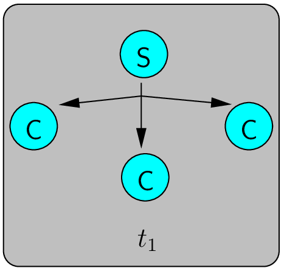

Data Delivery Models [?]
Vicente González Ruiz
June 1, 2018
Contents
1 C/S (Client/Server) model
- The server sends all data.
2 CDN (Content Distribution Network) model
- Server (and channels) are replicated.
- All servers store the same content (data must be replicated).
3 P2P (Peer-to-Peer) model
4 IP Multicast model

- The routers do most of the job.
References